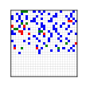
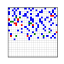

TCaenr
There are 2 similar sequences in this cluster.

Translation 2898-3608 has 94 edits, 13 inserts, and 12 deletes relative to the median sequence.

mCherry has 97 edits, 10 inserts, and 12 deletes relative to the median sequence.
Translation 2898-3608
Translation 2898-3608 appears in 1 plasmid under 1 name.
Translation 2898-3608
mCherry
mCherry appears in 1 plasmid under 1 name.
mCherry